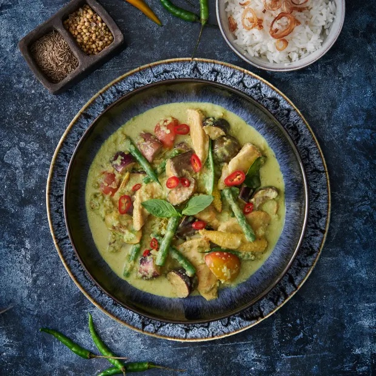

home
Kean Kiew Wan Recipe

A plate of thai green curry with chicken set on a table surrounded
by a bowl of rice and scattered thai green chilli peppers.
Thai Curries are one of my favorite weeknight dishes to whip together when I'm craving a fast comforting
meal. The secret is to use a high quality curry paste to get those authentic flavors in a quick meal.
Ingredients
Here are ingredients you'll need for an authentic Thai green curry. The bamboo shoots are a common vegetable
used for green curry, but feel free to change it up.
- Thai basil
- Bamboo shoots, canned
- Red chillies
- Green curry paste, store bought or homemade
- Kaffir lime leaves
- Full fat coconot milk
- Fish sauce
- Palm sugar
- Boneless chicken
- Chicken stock, unsalted
- Thai basil leaves (also known as horopa)
Instructions
- Scoop the solid coconut fat out of the can and heat in the pan until slightly bubbly.
- Add the green curry paste and stir and saute on low to medium fire until well integrated.
- Add the rest of the can of coconut milk en stir well for a few seconds. Now add the kaffir lime
leaves and chicken stock.
- Add the chicken, fish sauce and palm sugar. Simmer (not a rolling boil) for 10-15 minutes.
- Add bamboo shoots for a minute until the curry comes close to a boil.
- It's time to finish up with red chillies and Thai basil leaves. Turn of the heat and serve over
fresh steaming jasmine rice.